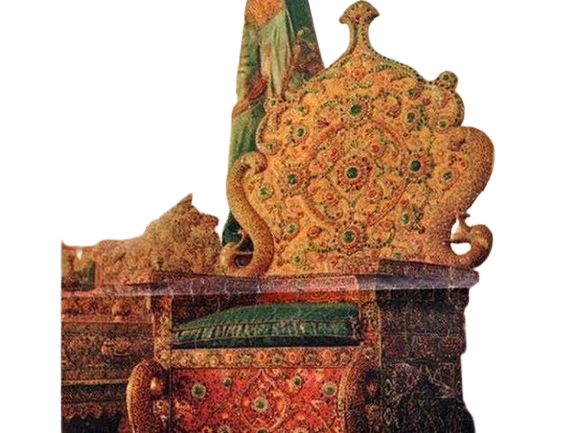
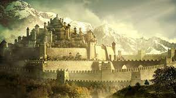

Historical Golden Throne
According to tradition, the throne belonged to the Pandavas of Mahabharata fame and was in Hastinapura. Kampilaraya
brought this throne from Hastinapura to Penugonda, now in Andhra Pradesh, where it was kept underground. In 1336 AD,
Vidyaranya, the royal preceptor of the Vijayanagar kings, showed the spot where it was buried to Harihara I, one of the
founders of the Vijayanagar empire, who retrieved the throne. The throne was then used by the Vijayanagar kings at
Anegondi for more than a century and a half. During the early part of the 17th century the Governor of Vijayanagar
rulers at Srirangapatna obtained the throne. In 1609, the governor Srirangaraya gave the throne to Raja Wodeyar. In
1610, Raja Wodeyar ascended the throne. Inaugurated the Dasara festivities. Epigraphical evidence shows that this royal
throne was in the possession of Chikkadevaraya Wodeyar in 1699.
List of Indian monarchs
- Heheya Kingdom
- Magadha dynasties
- Gonanda dynasty of Kashmir
- Gandhara Kingdom (c. 1500 – 518 BCE)
- Kuru Kingdom (c. 1200 – 345 BCE)
- Kosala Kingdom (c. 1100 – 345 BCE)
- Videha dynasty of Mithila (c. 1100 – 700 BCE)
- Panchala Kingdom (c. 1100 BCE – 350 CE)
- Anga Kingdom (c. 1100 – 530 BCE)
- Kalinga Kingdom (c. 1100 – 261 BCE)
- Kamboja Kingdom (c. 700 – 200 BCE)
- Shakya Republic of Kapilavastu (c. 7th to 5th century BCE)
- Pandyan dynasty (c. 600 BCE – 1650 CE)
- Chera dynasty (c. 600 BCE–1530 CE)
- Chola dynasty (c. 600 BCE – 1279 CE)
- Kingdom of Tambapanni (c. 543–437 BCE)
- Satavahana dynasty (c. 230 BCE–220 CE)
- Mahameghavahana dynasty (c. 225 BCE – 300 CE)
- Kingdom of Kangleipak (Manipur) (c. 200 BCE –1950 CE)
- Kuninda Kingdom (c. 2nd century BCE to 3rd century CE)
King George VI Falls
King George VI Falls, also known as Salto Oshi or Oshi Falls, is located on the Oshi River in the Cuyuni-Mazaruni region
of Guyana.
This waterfall is rarely visited.[2] The exact height waterfall used to be unknown, but was measured in 2014 at 214
metres (702 ft)[1] Though it is not as tall as it has long been thought to be, it is notable for its combination of
height and great volume of water, along with its being a sheer plunge. The overhanging cliff gives a visual illusion of
a much bigger fall.[1]
The first westerner to see the falls was reportedly American entomologist and physician Paul A. Zahl in 1938.[2] Height
of this waterfall has often been reported to be 1,600 feet, and that figure has been published many times over several
decades, but it is greatly exaggerated.[2] The error originated from imprecise measurements of Paul A. Zahl who
estimated the height of falls by throwing large rocks and counting seconds until the stones fell down.

kingdom
A kingdom is a piece of land that is ruled by a king or a queen. A kingdom is often called a monarchy, which means that
one person, usually inheriting their position by birth or marriage, is the leader, or head of state.
Kingdoms are one of the earliest types of societies on Earth, dating back thousands of years. There have been hundreds,
if not thousands, of different kingdoms throughout history. Kingdoms can be huge, such as the United Kingdom. During the
nineteenth century, the United Kingdom, ruled from London, England, stretched over five continents. Kingdoms can also be
small, such as the kingdom of Brunei, which is smaller than the U.S. state of Delaware.
Kingdoms are rarely ruled by an absolute monarch, a single king or queen who makes all decisions for the entire state.
Kingdoms are usually broken into smaller territories, such as city-states or provinces, that are governed by officials
who report to the monarch. Most modern kings and queens do not control the government. Elected leaders and constitutions
establish laws for most kingdoms today.